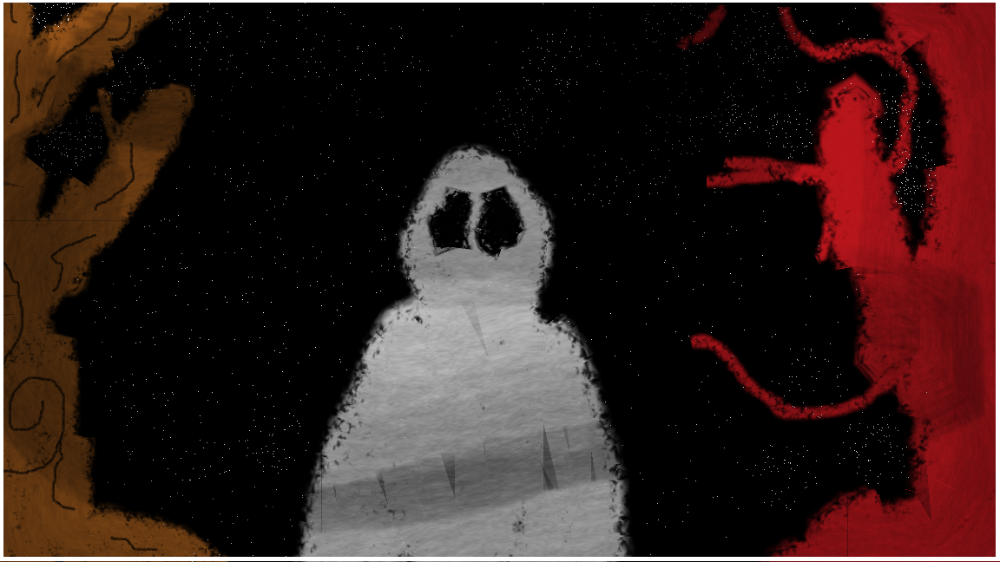

| Beyong|God | |||||
|
 |
Mansion Valkis A cerca de 5 anos, ocorreu um massacre na Mansão Valkis, todos foram mortos, o mais estranho é que não haviam digitais, sem provas, sem marcas, sem culpado, o caso foi encerrado e o que havia acontecido lá virou apenas especulações, mas após todos esses anos, você, um investigador curioso e interessado nesses tipos de história, aparece para tentar desvendar o que aconteceu nessa casa mesmo após anos... mas parece que você não está sozinho nesta Mansão...
Preço: R$ 31,99 |